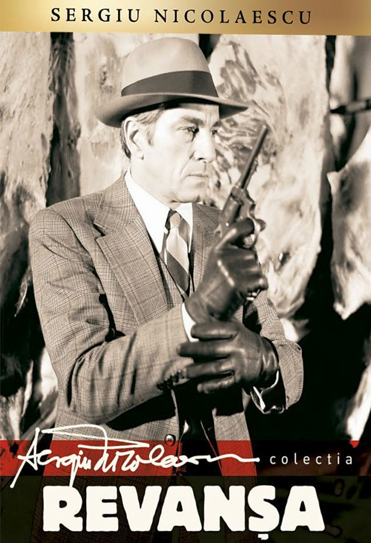
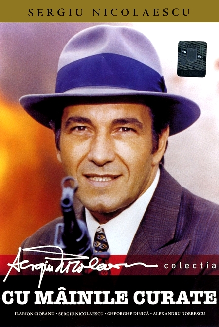
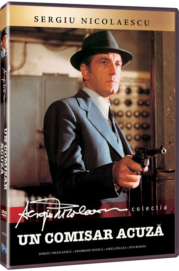
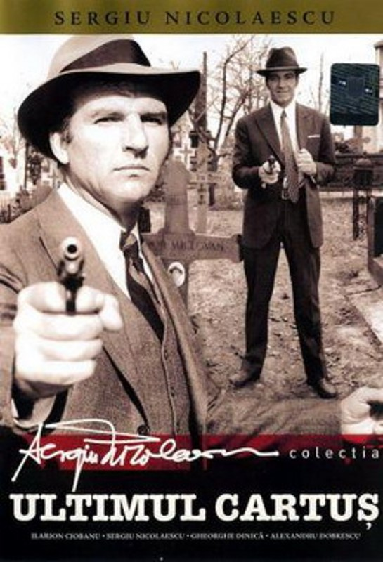
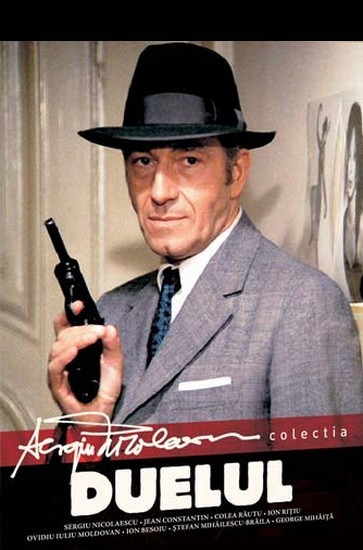
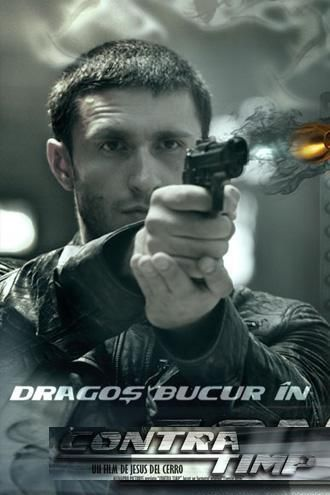
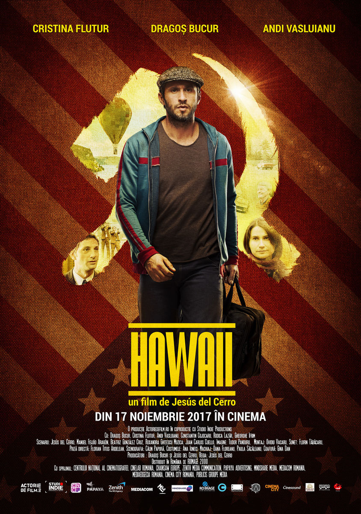
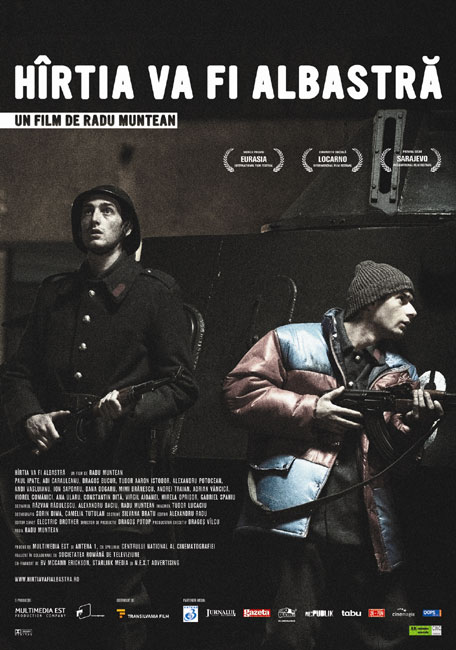

Filme de acțiune

Revanșa
8.4
E iarna lui 1941. Comisarul Moldovan (Sergiu Nicolaescu) trăiește, deși filmul precedent îl dăduse drept mort.
Pe fondul unor evenimente extrem de tensionate (schimbarea dictaturii legionare cu cea antonesciană),
aventura comisarului - căutat acum de poliția politică - merge mai departe.
După ce Paraipan (Gheorghe Dinică) îi răpește băiatul, Comisarul se înverșunează să pună mâna pe șeful legionar
și pe cei de deasupra lui. Cu sprijinul ilegaliștilor comuniști, Moldovan își elimină adversarii unul câte unul.
În final este însă trădat de propriii lui șefi.

Cu mâinile curate
8.3
Comisarul Roman (Ilarion Ciobanu) și colegul său, Miclovan (Sergiu Nicolaescu), sunt nevoiți să lupte împotriva crimei organizate
apărute în București după încheierea războiului. Metodele rigide ale lui Roman se văd deseori completate de cele neortodoxe
ale lui Miclovan. Tot ce își doresc ei este ca, în final, să rămână cu mâinile curate.

Un comisar acuză
8.3
București, noiembrie 1940. Regimul legionar este în plină expansiune. Comisarul Moldovan (Sergiu Nicolaescu)
este însărcinat cu anchetarea asasinării deținuților politici din închisoarea Viraga, în noaptea de 26 spre 27 noiembrie.
Prin desemnarea unui om neafiliat politic în acest caz, autoritățile spera să înoculeze opiniei publice ideea că poliția
își face datoria în mod onest. Guvernul intenționează să mușamalizeze cazul, însă Moldovan este incoruptibil și nu cedează
în fața presiunilor și intimidărilor. Și, mai presus de orice, el vrea să scoată adevărul la lumină.
Tocmai de aceea, un comando legionar aflat sub conducerea lui Paraipan (Gheorghe Dinică)
va face orice pentru a-l scoate din joc...

Ultimul cartuș
8.1
Ultimul cartuș al comisarului Miclovan este încă fierbinte în buzunarul lui Roman (Ilarion Ciobanu).
Rămas fără sprijinul lui Miclovan, mort în misiune, comisarul Roman vrea să-l vadă pedepsit pe asasinul
acestuia, un mafiot și contrabandist local foarte puternic, dom' Semaca (George Constantin),
pe care tribunalul îl achitase din lipsă de probe.

Duelul
7.9
Comisarul Moldovan trebuie să rezolve cazul unui jaf asupra băncii centrale,
avându-l ca ajutor pe Petrescu (George Mihăiță), un partener începător.
Lucrând sub acoperire ca profesor de sport, comisarul reușește să ia legătura cu singurii martori
ai jafului, trei copii ai străzii. Pornind de la informațiile primite de la Limbă (Jean Constantin),
reușește să îi descopere atât pe Maimuca (Colea Răutu), autorul jafului, cât și pe adevăratul lider
al bandei, Rica Păsărin (Ion Ritiu).

Contra Timp
7.3
Dragoș Bucur revine în rolul lui Călin Boboc din celebrul serial polițist Băieți Buni!
Proaspăt promovat în funcția de inspector-șef, Călin reia lupta împotriva mafiei alături
de Bogdan, Dobrescu, Lori, Maria și procurorul Iacob.
Ținta: periculosul clan al fraților Javela, format din Sandu, actualul cap al grupării,
Nicu, fostul lider și Paris, un gangster mărunt.

Hawaii
7.2
Jesús del Cerro ne prezintă Hawaii, o poveste despre cum să ajungi la o moștenire de 3 milioane de dolari
într-o vreme când un singur dolar deținut în casă era motiv să-ți pierzi libertatea pe viață.
Hawaii este un film de acțiune, despre dragoste, dar și despre bani cu care îți poți cumpăra dacă nu fericirea,
măcar libertatea de a alege să fii nefericit.

Hârtia va fi albastră
8.4
București, 22 spre 23 decembrie 1989.
Plutonul de intervenție motorizat, condus de locotenentul Neagu primește ordin de patrulare prin cartierele mărginașe. Stația radio a vehiculului funcționează intermitent, iar mesajele care se transmit între unitățile de blindate, emisia trunchiată a posturilor de radio și TV informează vag despre niște teroriști care atacă televiziunea națională și aruncă în confuzie membrii echipajului. Costi, unul dintre cei doi soldați în termen ai plutonului, ajuns să facă armata în București datorită intervențiilor tatălui său, crede că misiunea oricărui român, după atâția ani de dictatură, e să lupte împotriva susținătorilor lui Ceaușescu, indiferent de ordinele superiorilor și o susține cu aerul răsfățat și încăpățânat al unui băiat de bani gata. Are pe această tema o controversă cu locotenentul Neagu și, profitând de o altercație dintre colegii lui și un grup de manifestanți, fuge să lupte la Televiziune, în ciuda amenințărilor și rugăminților locotenentului.
Plutonul de intervenție motorizat, condus de locotenentul Neagu primește ordin de patrulare prin cartierele mărginașe. Stația radio a vehiculului funcționează intermitent, iar mesajele care se transmit între unitățile de blindate, emisia trunchiată a posturilor de radio și TV informează vag despre niște teroriști care atacă televiziunea națională și aruncă în confuzie membrii echipajului. Costi, unul dintre cei doi soldați în termen ai plutonului, ajuns să facă armata în București datorită intervențiilor tatălui său, crede că misiunea oricărui român, după atâția ani de dictatură, e să lupte împotriva susținătorilor lui Ceaușescu, indiferent de ordinele superiorilor și o susține cu aerul răsfățat și încăpățânat al unui băiat de bani gata. Are pe această tema o controversă cu locotenentul Neagu și, profitând de o altercație dintre colegii lui și un grup de manifestanți, fuge să lupte la Televiziune, în ciuda amenințărilor și rugăminților locotenentului.